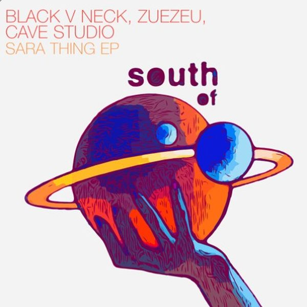

I 18 dischi e le top 6
 1
ThunderBYOR
1
ThunderBYOR
 2
Sometimes (Tujamo's Club Mix)Tujamo x Gamuel Sori x SAYNT
2
Sometimes (Tujamo's Club Mix)Tujamo x Gamuel Sori x SAYNT
 3
Bon BonJack Orley
3
Bon BonJack Orley
 4
SatisfiedDavid Penn, OFFAIAH
4
SatisfiedDavid Penn, OFFAIAH
 5
TongarraScruby
5
TongarraScruby
 6
Needin' UDavid Morales, Wh0, Sam Frandisco, Steve Martano
6
Needin' UDavid Morales, Wh0, Sam Frandisco, Steve Martano
 7
TAKAAhadadream, Priya Ragu, Skrillex
7
TAKAAhadadream, Priya Ragu, Skrillex
 8
Jamming (FISHER Rework)Bob Marley & The Wailers
8
Jamming (FISHER Rework)Bob Marley & The Wailers
 9
Yeke YekeVin Vega
9
Yeke YekeVin Vega

10 (ft. James Cole) - Sara ToninBlack V Neck & ZUEZEU 11
RápidaTeko, Alex O'Clock
11
RápidaTeko, Alex O'Clock
 12
Sombrerito BlancoJude & Frank, Cumbiafrica
12
Sombrerito BlancoJude & Frank, Cumbiafrica
 13
Super Model (ft. Dakota)Benson & CERCA
13
Super Model (ft. Dakota)Benson & CERCA
 14
WORKGood Times Ahead, Kideko
14
WORKGood Times Ahead, Kideko
 15
Don't Wanna FallHÄWK & Framed Stories
15
Don't Wanna FallHÄWK & Framed Stories
 16
DemolitionCorey James, TR3NACRIA
16
DemolitionCorey James, TR3NACRIA
 17
Turn On The LightsSiks & KDH
17
Turn On The LightsSiks & KDH
 18
Ori Tali Ma (BLR Remix)Sander van Doorn
18
Ori Tali Ma (BLR Remix)Sander van Doorn
La tracklist
- 1 Thunder BYOR Sink or Swim
- 2 Sometimes (Tujamo's Club Mix) Tujamo x Gamuel Sori x SAYNT Dance Differently
- 3 Bon Bon Jack Orley MINUTE TO MIDNITE
- 4 Satisfied David Penn, OFFAIAH Toolroom Records
- 5 Tongarra Scruby Toolroom Records
- 6 Needin' U David Morales, Wh0, Sam Frandisco, Steve Martano Snatch! Records
- 7 TAKA Ahadadream, Priya Ragu, Skrillex Major Recordings/FFRR
- 8 Jamming (FISHER Rework) Bob Marley & The Wailers Island Records
- 9 Yeke Yeke Vin Vega SHOONZ
- 10 (ft. James Cole) - Sara Tonin Black V Neck & ZUEZEU South Of Saturn
- 11 Rápida Teko, Alex O'Clock Sola
- 12 Sombrerito Blanco Jude & Frank, Cumbiafrica Club Sweat
- 13 Super Model (ft. Dakota) Benson & CERCA Ultra Records
- 14 WORK Good Times Ahead, Kideko Ultra Records
- 15 Don't Wanna Fall HÄWK & Framed Stories Slagelhag Records
- 16 Demolition Corey James, TR3NACRIA SIZE Records
- 17 Turn On The Lights Siks & KDH Hexagon
- 18 Ori Tali Ma (BLR Remix) Sander van Doorn Spinnin' Records